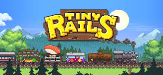

Tiny Rails

What's Tiny Rails??? Well thank you for asking, it is a game of trains and wierdness. You probably aren't convinced so I will show you a video.
If you're not convinced then o'well you can't get rid of me.
Tips:
Try double tapping the train engine (located at the front) and watch what happens
Only take on the following cargo: 1) Honey 2) Steel 3) Salmon 4) Strawberrys 5) Wood. That gets you alot of money because it's always in demand.
News:
Nothing yet